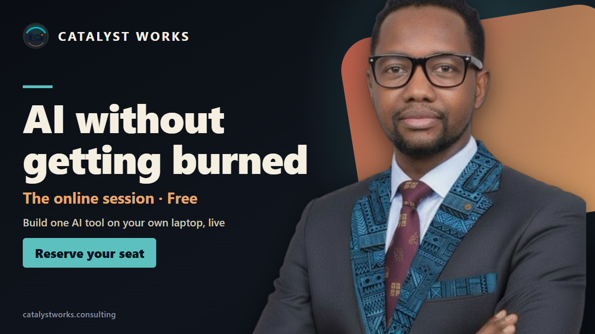
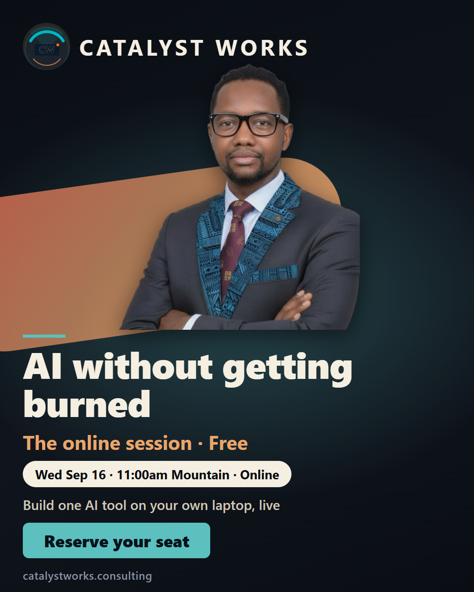
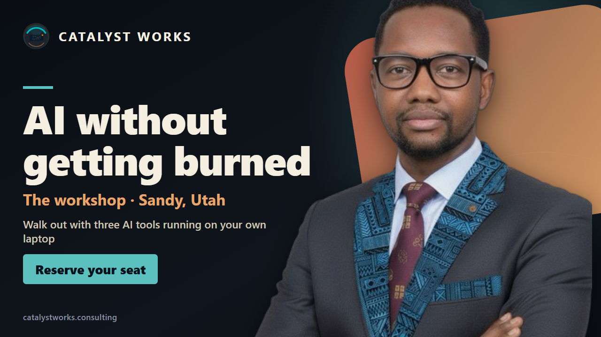
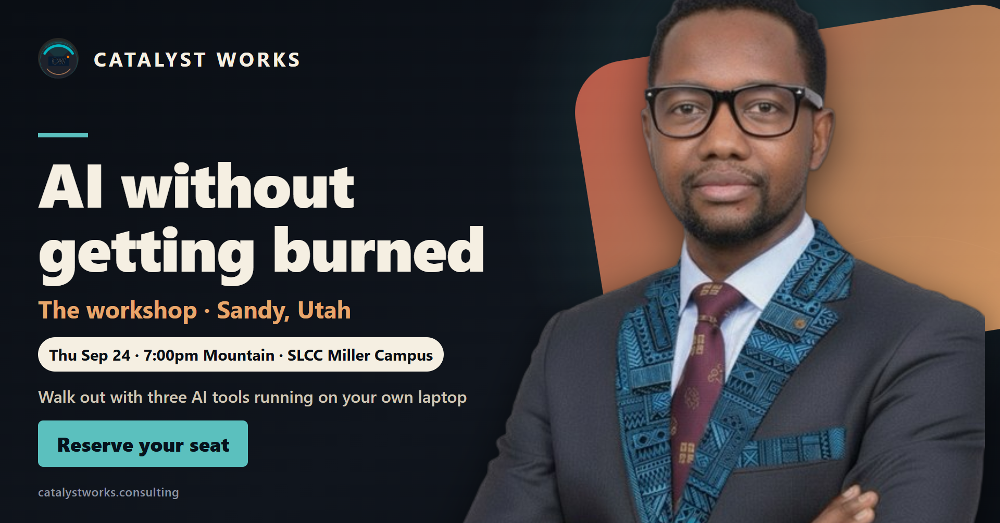
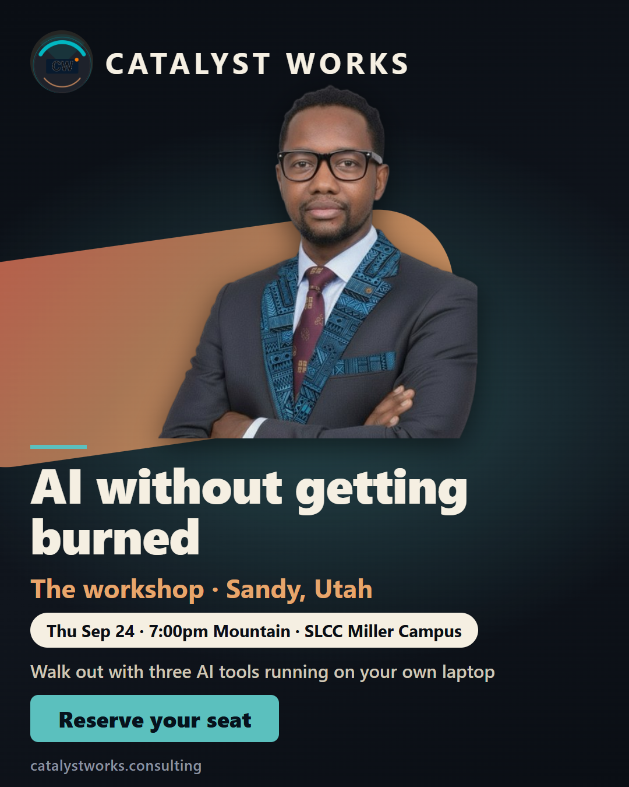
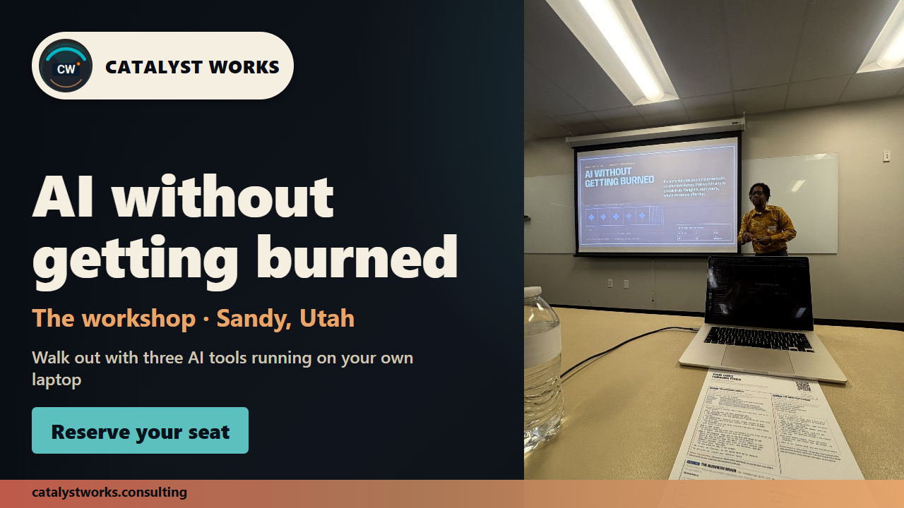

Two real, currently-scheduled sessions, three formats each, plus one alternate. Sept 16 online (now FREE per D-20260907-6347c9) and Sept 24 in-person ($50, Sandy UT) both got a LinkedIn Event cover (1280×720, no date baked in), a date-included version for Eventbrite/Facebook (1920×1005), and a portrait version for Instagram/Facebook feed (1080×1350, date included).
Design uses your real headshot, cut out and layered in front of the graphic (not boxed beside it), the real Catalyst Works logo mark sized up so "CW" actually reads, and the real dark-navy + earth-tone + cyan palette from the color-theory research doc (docs/reviews/color-theory-2026-09-06/). Headline text is the exact live H1 from catalystworks.consulting/online/ and /workshop/ — "AI without getting burned" — not an invented tagline.
One alternate for Sept 24 uses a real photo of you presenting this exact workshop (July 30, Sandy) instead of the studio headshot, per your ask for teaching/presenting shots — see Section 3 for why it's offered as an alternate and not the default.
Grab the file you need directly from the cards below (right-click → save, or open in a new tab on mobile).
Confirmed live from docs/LIVE_STATE.md: Stripe product prod_V1F0GT6RfTOswY "AI Without Getting Burned, online session", link plink_1U1CWwQWqcWWuBB0jgP2KmJT stays live at $25 in Stripe itself, but the registration FLOW was flipped to FREE on 2026-09-07 (decision D-20260907-6347c9) — catalystworks-site online/index.html sets NEXT_SESSION.free = true and skips the Stripe redirect entirely. 11:00am–12:00pm Mountain, Google Meet.

Open full size →
Open full size →Confirmed live from docs/LIVE_STATE.md: Stripe product prod_UfXH0rdp6HHbTy "AI Without Getting Burned - Workshop Seat", link plink_1U0tVOQWqcWWuBB0JrKaQw0E, price price_1U0tV6QWqcWWuBB0HMx9JnWe at 5000 usd, active and untouched by the Sept 16 free flip. 7:00–8:30pm Mountain (room opens 6:30), SLCC Miller Campus, Sandy, Utah.

Open full size →
Open full size →
Open full size →You asked to explore photos of you actually teaching/presenting to a group instead of only the solo headshot. I searched Ai_Sandbox\boubacarbarry-site and found real, usable shots from the July 30 in-person run of this same workshop in Sandy — not stock, not generated. Two exist: one of you presenting to the room with the "AI WITHOUT GETTING BURNED" slide visible behind you (review/archive/20260813-portfolio/img/room-teaching.jpg), and one of you coaching an attendee 1:1 at their laptop (.../coaching.jpg, face turned away from camera so it's less usable for a banner).
Why the studio headshot stays the recommended default and this is the alternate, not a replacement: the room-teaching photo is a real wide shot of the whole room — screen, laptop, handouts, water bottle — so your face reads small at banner scale, and the composition can't take the same "cutout him large in front of the graphic" treatment because it's a full scene, not a portrait. It's honest and it's real, and it may read as more credible precisely because it's unpolished. Your call on which wins for Sept 24.

Open full size →If this is the direction, say the word and I'll build the matching datebar + portrait variants and the equivalent for a Sept 16 presenting shot if one exists (none found yet for the online session specifically, since it runs on Google Meet with no room to photograph).
Round 1 feedback (logo illegible, boxed headshot, "look at everything yourself"): the CW logo mark was too small to read at banner scale — fixed by roughly doubling it and confirming "CW" is legible by cropping and zooming into the actual rendered PNG myself, not just trusting the composite step. The original layout dropped your photo in a flat rectangle beside the text; that's now a proper cutout (background removed with rembg/BRIA, transparent edges) composited in front of a diagonal earth-tone accent shape so you visually overlap the design instead of sitting in a box next to it, matching the layered look in the reference LinkedIn Events screenshots you sent.
Round 3 feedback ("too many ghosts" in the logo): zoomed into the real source file (catalystworks-site/seat/assets/cw-logo.png) at 2x and confirmed the "ghosting" is baked into that PNG itself — the letterforms have a stippled/noisy texture and the mark carries several overlapping translucent arc bands, both invisible at the 32px favicon scale the live site uses it at, both glaringly visible once blown up past ~90px the way the first fix did. I did not redraw or AI-regenerate the mark (per your instruction, and because that would mean inventing a new logo). What I did instead: removed a CSS ring effect I had added that compounded the problem, and sized the real, unmodified mark back down to where it renders clean (roughly its native 32–56px feel), while keeping "CATALYST WORKS" as the actual legibility carrier in large, crisp CSS type right beside it — that pairing (small clean mark + spelled-out name) is how real brand lockups solve exactly this tension, and it's the same pattern the live catalystworks.consulting site already uses. Zoomed screenshots of the corrected version are in this page's img files; every logo crop I checked reads as a single clean badge with no doubling.
Asset selection, confirmed: checked every logo file in the CW site repo — seat/assets/cw-logo.png and ai-checklist/assets/cw-logo.png are byte-identical (MD5-verified), both true RGBA with a transparent background; the root CatalystWorks_logo.jpg is the same artwork flattened to RGB with no transparency. No SVG exists anywhere in the repo. Used the transparent PNG deliberately (composites clean against the banner's dark background; the JPG would carry a visible rectangle) as a flat overlay layer, full opacity, no blend mode, no filter applied to the file itself — only its on-screen display size changed, which is layout, not image manipulation.
Flagging honestly, not quietly working around it: the CW mark's source PNG has a real quality defect at large display sizes (noisy/dithered edges inside the letterforms) that no amount of sizing fully removes if you need it bigger than roughly 90–100px — if you ever want it usable at hero scale (a big standalone logo lockup, not a small badge), that needs a clean vector redo of the mark itself, which is outside what this banner pass can or should attempt.
Every one of the 7 final PNGs below was opened and visually inspected at full size before this page was published — not just confirmed to render without error. Bugs caught and fixed this way across the three feedback rounds: the site-URL text colliding with the CTA button on the taller date-bar format, the portrait format overflowing past the bottom of the canvas (CTA and date pill were getting cut off entirely), the illegible logo, the flat boxed-headshot layout, and the logo ghosting artifact.
Honest ceiling: this is an HTML/CSS composite rendered via headless Chrome, not a hand-retouched Photoshop/Figma file. It's a real, deliberate step up from a boxed headshot — legible logo, layered depth, confident negative space, on-brand palette — but it is not literally agency-retouched photography. If the bar is a fully custom agency treatment, that's a different (paid, human-designer) deliverable than what this pass can produce.
| Check | Result |
|---|---|
| Sept 16 = free, confirmed live | docs/LIVE_STATE.md, "Sept 16 online session FLIPPED TO FREE" row, decision D-20260907-6347c9 |
| Sept 24 = $50, Sandy UT, confirmed live, untouched | docs/LIVE_STATE.md Stripe table, product prod_UfXH0rdp6HHbTy |
| Real photo used | Ai_Sandbox\boubacarbarry-site\Boubacar-cropped.jpg — the same headshot already live in the hero of boubacarbarry.com, cut out with rembg (BRIA RMBG-2.0 model, local, not a placeholder) |
| Real CW logo used | Ai_Sandbox\catalystworks-site\seat\assets\cw-logo.png — the actual mark used elsewhere on the CW site, enlarged and legibility-checked, not redrawn |
| Color-theory conclusion applied | skills/web-design-guidelines/references/color-theory-system.md + docs/reviews/color-theory-2026-09-06/: catalystworks.consulting's real palette (#0A0E14 ink, #F5EFE2 paper, #E8A66B/#B47C57/#C95F4D earth accents, #5BC0BE cyan), a split-complementary/analogous structure already verified AAA-contrast on the live site, cyan kept scarce for the one CTA button only |
| LinkedIn Event spec verified live | 1280×720, 16:9, min width 480 — pulled directly from LinkedIn's own Help Center page "Create a LinkedIn Event" (linkedin.com/help/linkedin/answer/a554183), not a stale third-party guess (several SEO blogs claim 1776×444, which is not what LinkedIn's own docs say) |
| Page read back after publishing | Yes — this page was fetched and re-read after the publish step to confirm the live URL renders and every image loads before reporting done |